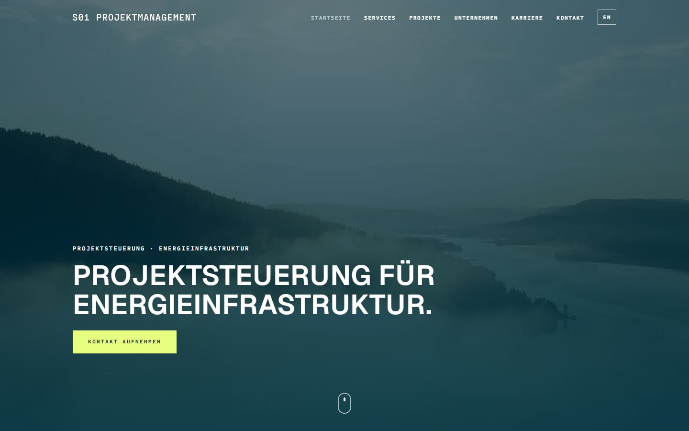

S01 website demos
Six fully navigable redesign demos of s01-pm.de in German and English, generated from one bilingual content source by a Node static generator with a component kit and a motion system. Playwright scripts check links, translations, contrast and layout at seven viewport widths; GitHub Actions builds and deploys every push.